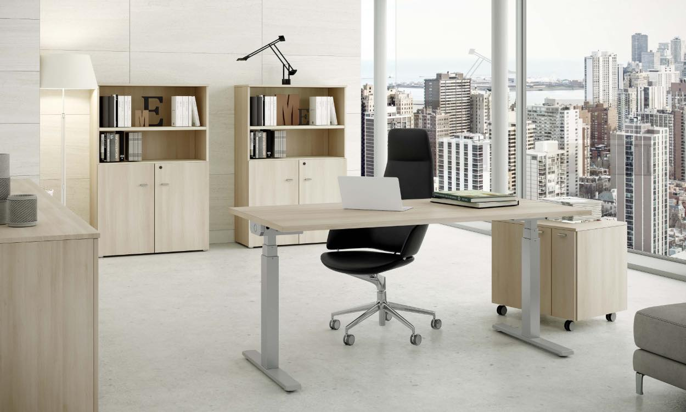
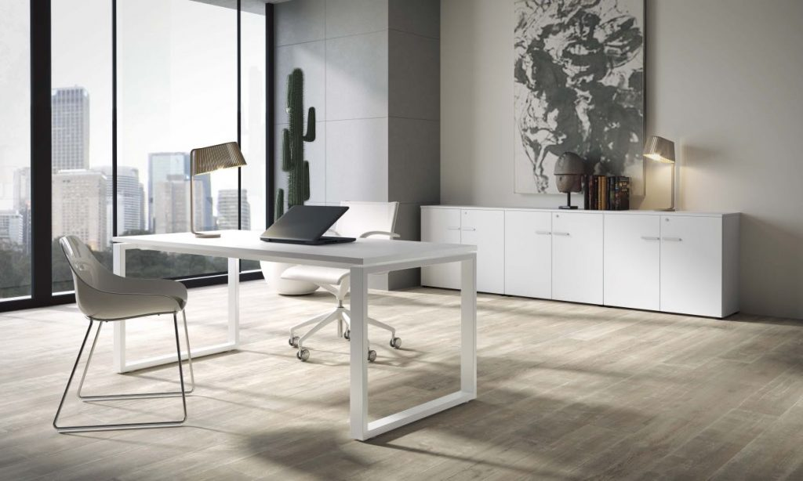
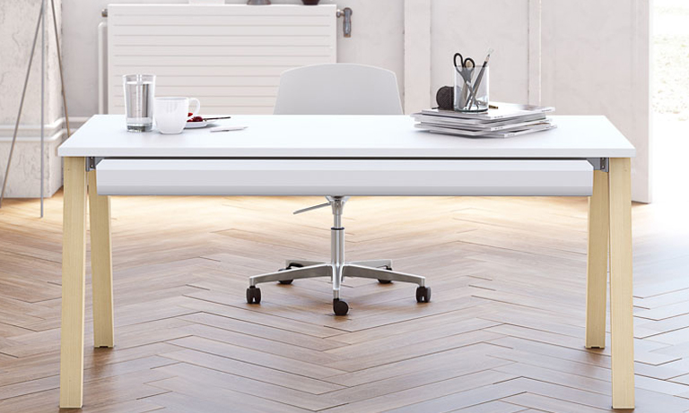

Mesas que se elevan electrónicamente, ese es el reclamo de las mesas Level. Flexibilidad y
versatilidad
en un sólo producto.
La serie Level tiene mesas elevables electrónicamente en altura lo que les permite adaptarse a las
necesidades de nuestros clientes con una versatilidad y flexibilidad nunca vista antes.
LEVEL, es la nueva filosofía de trabajo, respetando conceptos de ergonomía los cuales nos indican
que hemos de pasar cierto tiempo de nuestro horario en diferentes posiciones, e incluso de pie.
Ideal también para hacer reuniones express con los compañeros. Con una misma estructura tenemos
todos los largos disponibles desde 120 hasta 180 cm, e incluso mesas de reunión de 200×100.

Skala
La serie Skala tiene una estructura de diseño moderno y ligero pero muy resistente, ya que incluye
de serie 2 vigas de refuerzo.
SKALA, opcionalmente se puede añadir al despacho o mesa un faldón decorativo de melamina así como
diferentes accesorios metálicos lo que hace a la serie multifuncional
Estructura de 2mm de grosor y un tamaño de 70x30cm con epoxy de alta resistencia.

Born
Armonía y calidez la línea BORN se caracteriza por el particular diseño del lateral, que permite su
uso en espacios y contextos diferentes. Disponible con lateral de madera de haya maciza, acorde a
las tendencias actuales, o con estructura metálica en tres acabados distintos.
El lateral de madera de Haya barnizada. Crea una atmósfera natural y acogedora.
Luminaria para mesas enfrentadas.
Mesas enfrentadas con paneles frontales acústicos.

Pórtico
La serie Pórtico tiene una estructura de diseño moderno y ligero pero muy resistente ya que incluye
de serie 2 vigas de refuerzo.
Opcionalmente se le puede añadir un faldón decorativo de melamina así como diferentes accesorios
metálicos lo que hace que la serie sea multifuncional.
Con soportes metálicos soldados fabricados con material laminado en frío y plegado que les otorga
una gran robustez y poder de fijación al larguero.